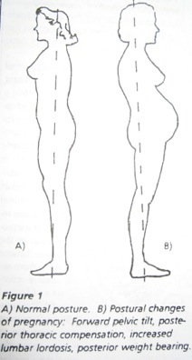

Charmaine L. Tu, D.C.
chiropractor
Being with child is probably one of the happiest times of a woman’s life. Unfortunately for some, this emotionally joyous phase of life, is often plagued by a myriad of musculoskeletal pain syndromes. These issues can create a wide range symptoms ranging from mild discomfort to debilitating pain. Studies show that approximately 80% of women report some form of back pain during pregn

ancy, and sadly 40% of these women suffer with moderate to severe pain. These various painful conditions are primarily caused by a combination of changing hormones and alterations in postural spinal biomechanics. The rapid growth of the uterus coupled with hormone induced laxity in the ligaments create abnormal structural loading, thereby causing shearing stresses on the spine and pelvis, especially the sacro-iliac joints.
As the center of gravity shifts, the body has a natural tendency to lean or arch back to avoid falling forward. This postural change creates an entirely new and foreign loading pattern for the muscles that support the body. This leads to increased muscle tension in the deep muscles of the low back and gluteal region and concomitant pressure on the round ligaments in the front. Additionally, hip musculature tightens to try to offer some stability and pain relief, resulting in the tendency to flare out the feet to avoid pain. Whether they know it or not this is why most expectant women have the characteristic “pregnancy waddle”.
As the physical changes increase with loading, various discomforting and painful conditions can surface.
Sciatica ~Though the cause of Sciatica can be multi-faceted, the above mentioned “pregnancy waddle” usually accompanies this condition. The piriformis muscle is the primary muscle that is responsible for foot flare. Chronic spasm of this muscle can lead to compression of the Sciatic nerve that runs under it, precipitating in “zings or electric-like” discomfort in the gluts and sometimes even the back of the leg.
Sacro-iliac/Pubic pain ~Often described as pain diagonally across the gluteal region to tailbone, Sacro-iliac (SI joint) pain is one of the most common complaints of pregnant women. Pelvic instability created by hormones and unusual weight-bearing results in sharp uncomfortable pain not only in posterior structures of the pelvis but also in the front, in particular, the pubic area.
Round ligament pain ~Many women suffer aches or sharp pains on either one or both sides of the abdomen. The uterus is harnessed like a hammock by muscles that run from the groin and up along the walls of the abdomen. Minor misalignments of the bony pelvis stress the ligaments that help to maintain joint integrity. As the uterus grows, the weight increases load and further stresses the attachment points of the ligaments and thus producing localized discomfort.
Back Labor ~Worst yet, distortion in the bony pelvis causing abnormal muscle tone of the pelvic floor, can misguide the fetus to turn and compress on sensitive nerves of the sacrum during labor, and hence producing severe back pain. Back labor can not only inhibit the mother to focus and work with her contractions, but can also complicate and prolong labor.
Fortunately, there are a wide variety of alternative treatments and proactive steps available to pregnant women that are safe and non-invasive.
Solution #1. Chiropractic Care/Body work/Acupuncture
In my opinion, there is nothing like Chiropractic in helping women thru pregnancy. Chiropractic is absolutely safe and effective for both mom and fetus. Chiropractic care helps to restore the structural misalignments that occur due to laxity from hormones, increasing load and gravity. Having the pelvis and spine well aligned thru pregnancy offers improved muscle function, and can therefore work synergistically during contractions to help the baby thru. Studies have shown that chiropractic care thru the pregnancy process can decrease labor time. Other body work such as massage and acupuncture can be effective as well. It is important that you consult with a practitioner who specializes in working with pregnant women.
Solution #2. Wear flats or supportive athletic shoes.
Wearing flats keeps the center of gravity of the body low and decreases extensive stress to the spine in comparison to wearing heels. Supportive shoes can help with balance and stability especially during the third trimester when weight is greatest.
Solution #3. Exercise Eg: Swimming/Yoga
Exercise helps to maintain muscular strength, enhance flexibility, and improve posture. Swimming is great for expectant mothers since it is a non-weight bearing activity, and decreases stress to joints as weight gain pursues thru pregnancy. Yoga helps to build “core” strength that can help throughout pregnancy. Consult your physician if you do not already have an exercise regime in place. It is not advised to perform rigorous exercise during your pregnancy.
Solution #4. Sleep on your side with a big pillow in between your knees. This helps to stabilize your pelvis, prevent torsion on your spine, and decrease stress to interuterine structures.
By becoming more educated about the structural changes associated with your pregnancy you can most likely prevent the painful conditions mentioned in the article. Obstetricians, Mid-wives and Doulas have been referring their patients to alternative practitioners for decades. Taking a proactive approach can decrease the chances of having an unpleasant pregnancy and a long discomforting labor and increase your chance of having a pleasant birth with less intervention.
For a local listing of practitioners in this area contact your local Parental/Mother’s group or other sources such as Blossom birth.
June 2008

Dealing with discomfort thru the pregnancy process
How to have a healthy and happy pregnancy
Written by Charmaine L. Tu, D.C.
Published in the Los Altos Town Crier, Family Magazine